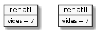

Múltiples instàncies
Fins ara hem definit una classe anomenada GatRenat, i n'hem creat una
instància a la que ens hem referit amb la variable renat. Tot plegat,
ens pot portar a creure que la classe GatRenat representa a un únic
exemplar de gat Renat. Però no és el cas. En podem fer més de Renats.
Per simplicitat, és preferible entendre que la classe engloba a un tipus o classe de gat molt particular, que coneixem de manera genèrica com a GatRenat.

Considera el següent codi en el que tindrem més d'un gat Renat:
1public class GatRenat {
2 public int vides = 7; // vides disponibles del gat Renat
3
4 public static void main(String[] args) {
5 GatRenat renatI;
6 renatI = new GatRenat(); // crea un primer gat Renat
7 System.out.println("El gat Renat I té " + renatI.vides + " vides");
8
9 GatRenat renatII = new GatRenat(); // crea un segon gat Renat!
10 System.out.println("El gat Renat II té " + renatII.vides + " vides");
11
12 renatI.vides++;
13 System.out.println("El gat Renat I té " + renatI.vides + " vides");
14 System.out.println("El gat Renat II té " + renatII.vides + " vides");
15
16 renatII = renatI; // atenció: la instància de Renat II es perd!
17 System.out.println("El gat Renat I té " + renatI.vides + " vides");
18 System.out.println("El gat Renat II té " + renatII.vides + " vides");
19
20 renatI.vides++;
21 System.out.println("El gat Renat I té " + renatI.vides + " vides");
22 System.out.println("El gat Renat II té " + renatII.vides + " vides");
23 }
24}
Contesta les següents preguntes:
Quina és la sortida del programa?
Quanta memòria ocupa, com a mínim, una instància de
GatRenat?Si tens dubtes, revisa aquest exercici.
Quantes instàncies hi ha de
GatRenattot just executat el codi fins la línia 5 (inclosa)?I fins la línia 6?
I fins la línia 9?
Perquè les línies 7 i 10 mostren les mateixes vides pels gats Renat I i Renat II?
Perquè les línies 13 i 14 mostren diferent nombre de vides pels gats Renat I i Renat II?
Què creus que vol dir el comentari de la línia 16?
Perquè les línies 17 i 18 mostren les mateixes vides pels gats Renat I i Renat II?
Perquè les línies 21 i 22 mostren les mateixes vides pels gats Renat I i Renat II malgrat la instrucció de la línia 20?
Quantes instàncies hi ha quan s'executa la línia 20? Perquè?